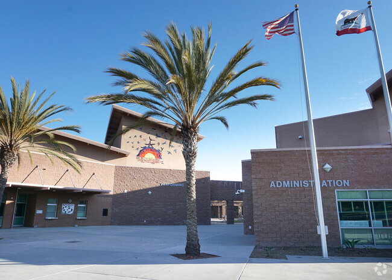

Canyon Crest Academy
San Dieguito Union High school District
How I Got Into Technology
I’ve always been curious about how computers work and what really happens behind the screen. When I first learned about coding, I was amazed that simple lines of text could create something interactive and useful. That curiosity grew into a real interest in computer science. I love how programming combines logic and creativity, that you can build something completely new just by thinking through a problem in the right way.
What I’m Learning Now
Right now, I’m exploring different parts of technology, like coding, cybersecurity, and AI. I enjoy challenging myself with new tools and figuring out how to make things work more efficiently. I like experimenting with small projects and learning from mistakes because that’s where real progress happens. Every time I solve a problem or finish a project, it gives me the confidence to try something even harder next time.
Looking Ahead
 In the future, I want to keep improving my coding skills and use technology to make a difference. I’m interested in building systems that help people, whether that’s apps that simplify daily tasks or projects that solve active real-world problems. My goal is to keep learning, creating, and growing as both a student and a developer. I believe that every new project is another step toward understanding what I can truly build.
In the future, I want to keep improving my coding skills and use technology to make a difference. I’m interested in building systems that help people, whether that’s apps that simplify daily tasks or projects that solve active real-world problems. My goal is to keep learning, creating, and growing as both a student and a developer. I believe that every new project is another step toward understanding what I can truly build.